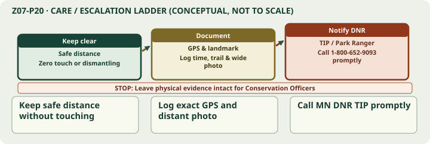

Z07-P20 · Traps and snares · New manuscript
Reporting Illegal, Unmarked or Out-of-Season Gear via TIP
Report suspected unlawful, park-located, or out-of-season trapping hardware safely to Minnesota DNR enforcement.
When it applies · Discovering suspected illegal traps, snares, or wildlife violations.
Equipment · GPS/phone camera from safe distance, MN DNR TIP 1-800-652-9093.

Actions
- Do not touch, dismantle, or relocate suspected illegal traps or snares; leave the scene intact for Conservation Officers while marking a safe mental/GPS landmark so others avoid it.[L09]
- Record exact GPS coordinates, trail junction distance, date, time, and a distant non-contact photograph showing the surrounding landmark.[L09, H15]
- Report immediately to the 24-hour Minnesota DNR Turn In Poachers (TIP) line (1-800-652-9093) or park ranger staff if located inside a state or national park.[L07, L08, L09]
Failure recognition · Moving or dismantling an illegal set destroys legal evidence and exposes good Samaritans to spring-bar injury or confrontation.[L09, H15]
Verify · Exact GPS coordinates, non-contact photo, and prompt TIP/ranger notification are completed safely.[L09, H15]
Stop or change course · Stop and leave the immediate area if an unknown individual approaches aggressively; call 911 for any personal threat.[L09, H15]
Evidence and editorial notes
- H15 · Minnesota DNR · Turn In Poachers (TIP) and Conservation Officer Reporting (Current web edition)
- Section: Turn In Poachers (TIP) and wildlife incident reporting · Conditions: Suspected wildlife violations, injured game, or unsafe incidents
Support: Observe from a safe distance, record location, time, descriptions, and license plates without confronting suspects, and report to MN DNR TIP or Conservation Officers.
Limitations: Do not pursue armed or hostile individuals or disturb physical evidence. · Conflicting evidence: None noted.
Editorial note: Defines Z06/Z07 non-confrontational incident reporting. · Specialist reviewer: Conservation enforcement reviewer
Primary source · checked 2026-11-25 - L07 · Minnesota DNR · Minnesota State Park Rules and Resource Collecting Restrictions (Current web edition)
- Section: Public park, trail, and recreation-area trapping prohibitions · Conditions: Minnesota State Parks, campgrounds, and restricted public trails
Support: Trapping is generally prohibited in Minnesota State Parks, SNAs, and designated high-use public recreation corridors.
Limitations: Public multiple-use forests and WMAs may permit lawful seasonal trapping; leash pets and check posted notices. · Conflicting evidence: None noted.
Editorial note: Clarifies where bystanders/pets may encounter lawful sets. · Specialist reviewer: Public-lands manager
Primary source · checked 2026-11-25 - L08 · National Park Service / eCFR · 36 CFR 2.1 Preservation of Natural, Cultural and Archeological Resources (Current CFR)
- Section: Federal park prohibitions on traps, snares, and wildlife disturbance · Conditions: National Park System lands and monuments
Support: Possessing or deploying traps or snares or disturbing wildlife on National Park lands is prohibited under federal regulation.
Limitations: Adjacent non-NPS lands follow state or tribal rules; know exact boundary lines. · Conflicting evidence: None noted.
Editorial note: Federal land-boundary clarity. · Specialist reviewer: Federal land-use reviewer
Primary source · checked 2026-11-25 - L09 · Minnesota DNR · Turn In Poachers (TIP) and Conservation Officer Reporting (Current web edition)
- Section: Reporting illegal, unmarked, or abandoned traps and snares · Conditions: Encountering suspected unlawful, out-of-season, or unsafe sets
Support: Do not touch, spring, or steal equipment; photograph from a safe distance with location coordinates and report to MN DNR TIP or local law enforcement.
Limitations: Tampering with lawful traps can be illegal and risks severe hand injury from stored spring energy. · Conflicting evidence: None noted.
Editorial note: Protects bystanders from injury and legal liability. · Specialist reviewer: Conservation enforcement reviewer
Primary source · checked 2026-11-25
Source lineage · New manuscript (Z07 P18 authority referral) · Classification · New manuscript.